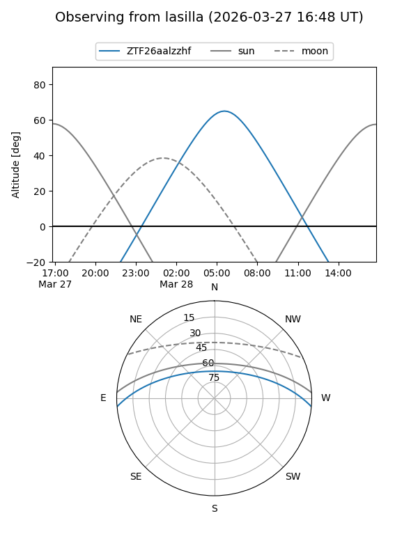
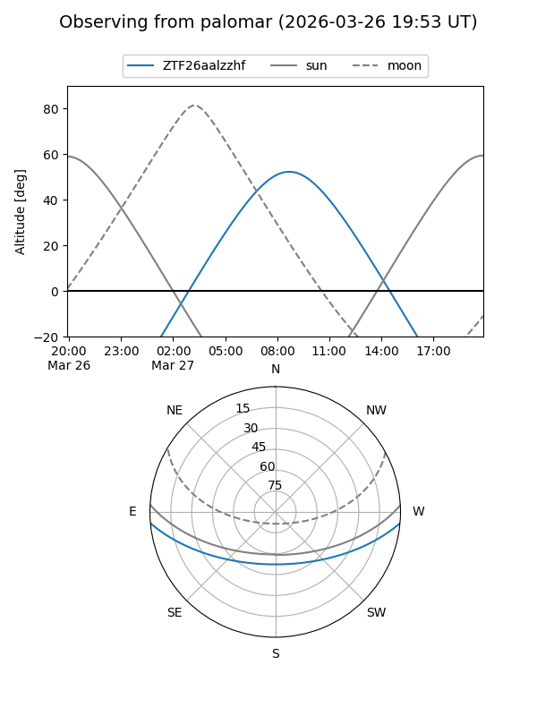

ZTF26aalzzhf
Target ZTF26aalzzhf at 2026-03-27 11:38
Aliases and brokers:
FINK: link
Lasair: link
ALeRCE: link
alt names
ZTF26aalzzhf (ztf,fink_ztf)
Coordinates:
equatorial (ra, dec) = 197.9836,-4.16692
equatorial (HMS+DMS) = 13:11:56.07,-04:10:00.92
galactic (l, b) = (312.6962,+58.31571)
Flags:
Photometry:
last ztfg=17.18, ztfr=17.09
1 ztfg, 1 ztfr detections
Lightcurve
Visibility


Additional plots